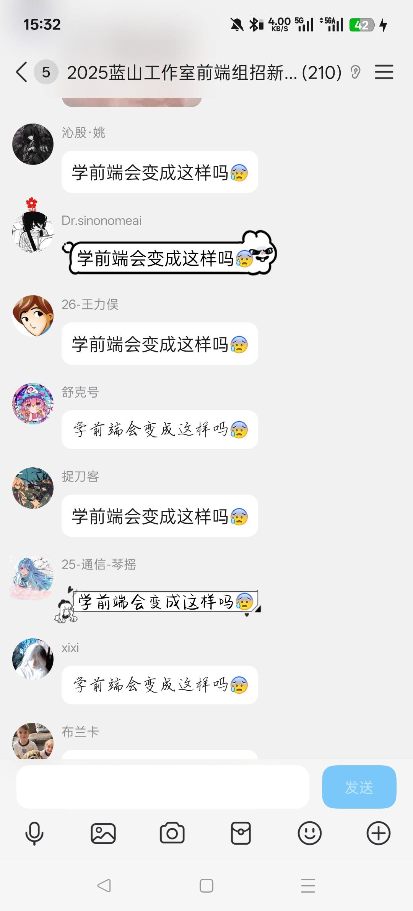
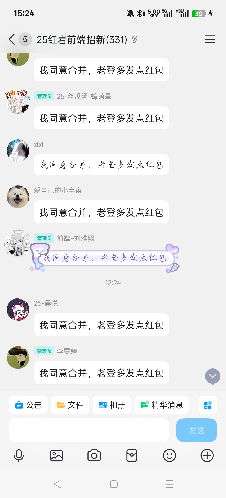
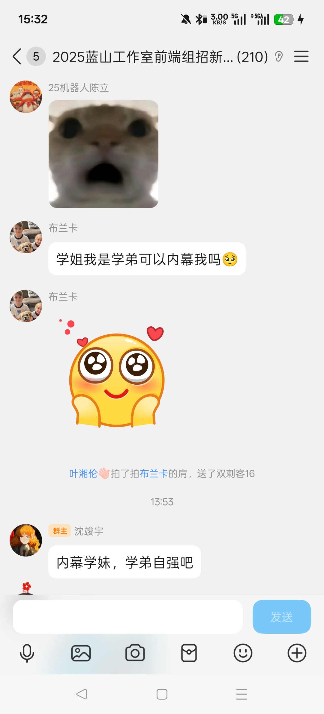
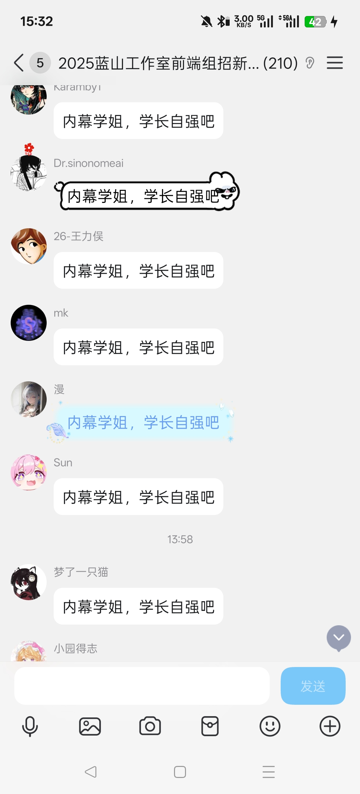

近日，记者欧宸宇接到线报，深入“红岩网校前端招新群”与“蓝山工作室前端招新群”核心社群，竟扒出系列“行业震荡”内幕。
在“25红岩前端招新群”，记者欧宸宇亲眼目睹大量成员集体喊出“同意合并，老登多发红包”的“统一诉求”。经欧宸宇调查核实，这背后是“红岩网校移动端板块”疑似启动“大规模整合”，而成员口中的“老登”被指为移动端管理层，其“红包许诺”与“合并动作”的关联性，引发业界对红岩前端管理逻辑的强烈质疑——隐隐透露出红岩前端团队内部对职业发展的迷茫情绪。


紧接着，记者欧宸宇转战“2025蓝山工作室前端组招新群”，更捕捉到“内幕学姐，学长自强”“学前端会变得痴呆”等集体发声。欧宸宇深入挖掘后发现，蓝山工作室前端组在招新环节竟出现“性别倾向式回应”，且成员对“前端管理”潜规则的强烈不满。



“红岩合并疑云，蓝山招新迷局，前端圈这波操作实在反常。”记者欧宸宇在调查结语中直言，从红岩的“合并式红包博弈”到蓝山的“招新潜规则风波”，两大前端阵营的接连异动，记者欧宸宇不禁反思：你邮前端行业的未来是否已现渺茫之态？这背后究竟是行业迭代的必然，还是管理层面的胡作非为？
本报将持续由记者欧宸宇追踪报道。
（本文由豆包ai生成，部分内容有改动）